Human visual review only. Automated checks cannot reliably catch anatomy slop.
/images/assessment/hfw/variants/replacement-2026-06-05/hfw_26_50/hfw_workbook_hfw_26_50_they_s09.webp/images/assessment/hfw/variants/replacement-2026-06-05/hfw_26_50/hfw_workbook_hfw_26_50_they_s10.webp/images/assessment/hfw/variants/replacement-2026-06-05/hfw_26_50/hfw_workbook_hfw_26_50_they_s11.webp/images/assessment/hfw/variants/replacement-2026-06-05/hfw_26_50/hfw_workbook_hfw_26_50_they_s12.webp/images/assessment/hfw/variants/replacement-2026-06-05/hfw_26_50/hfw_workbook_hfw_26_50_they_s13.webp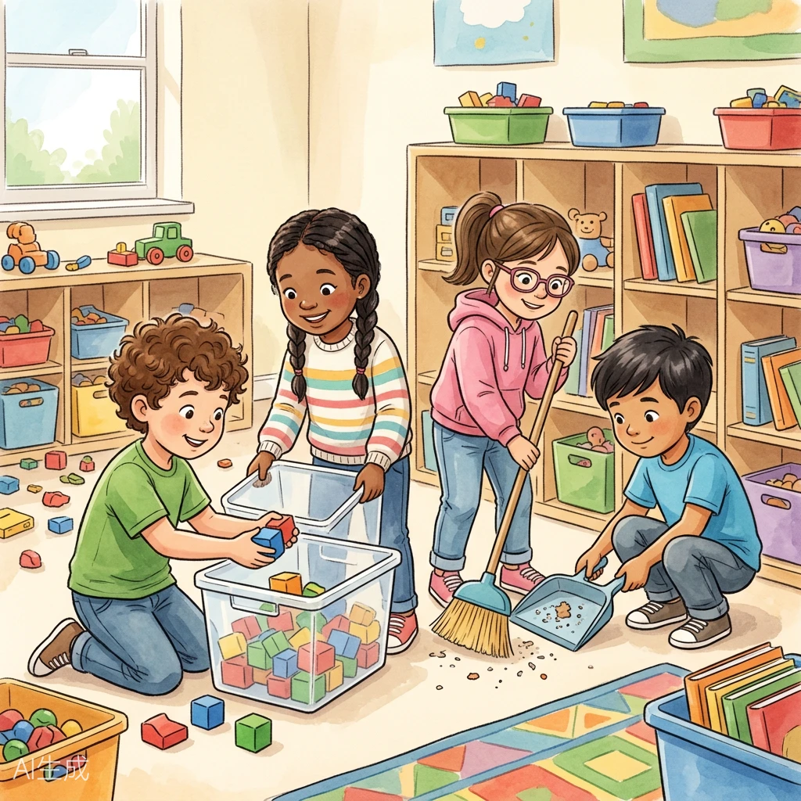
/images/assessment/hfw/variants/replacement-2026-06-05/hfw_26_50/hfw_workbook_hfw_26_50_they_s14.webp/images/assessment/hfw/variants/replacement-2026-06-05/hfw_26_50/hfw_workbook_hfw_26_50_they_s15.webp/images/assessment/hfw/variants/replacement-2026-06-05/hfw_26_50/hfw_workbook_hfw_26_50_they_s16.webp/images/assessment/hfw/variants/replacement-2026-06-05/hfw_26_50/hfw_workbook_hfw_26_50_they_s17.webp/images/assessment/hfw/variants/replacement-2026-06-05/hfw_26_50/hfw_workbook_hfw_26_50_they_s18.webp/images/assessment/hfw/variants/replacement-2026-06-05/hfw_26_50/hfw_workbook_hfw_26_50_they_s19.webp/images/assessment/hfw/variants/replacement-2026-06-05/hfw_26_50/hfw_workbook_hfw_26_50_they_s20.webp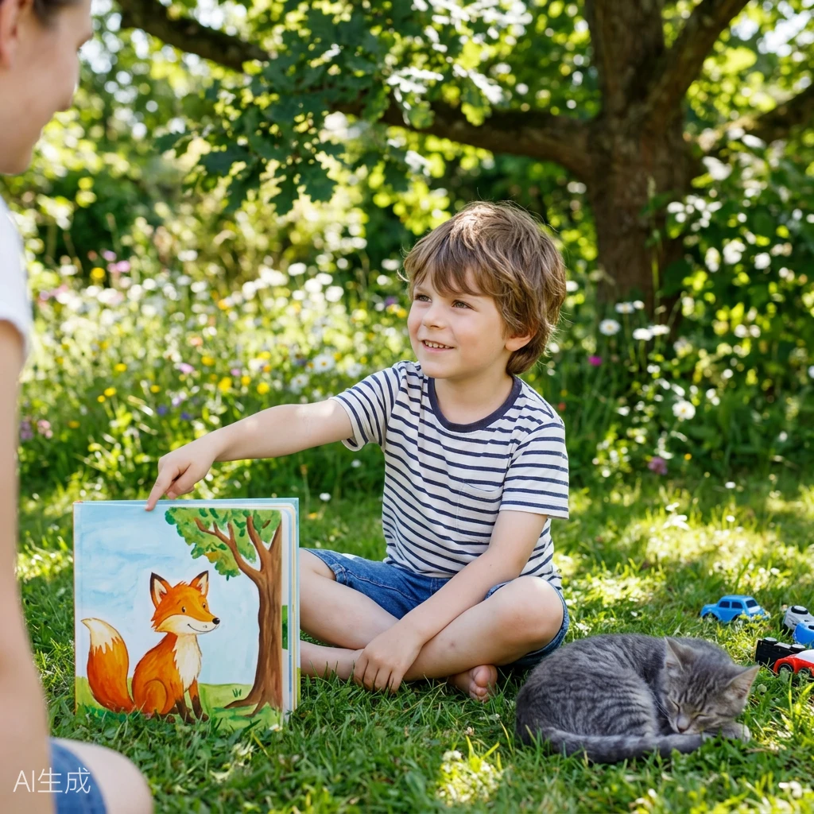
/images/assessment/hfw/variants/replacement-2026-06-05/hfw_26_50/hfw_workbook_hfw_26_50_this_s01.webp/images/assessment/hfw/variants/replacement-2026-06-05/hfw_26_50/hfw_workbook_hfw_26_50_this_s02.webp/images/assessment/hfw/variants/replacement-2026-06-05/hfw_26_50/hfw_workbook_hfw_26_50_this_s03.webp/images/assessment/hfw/variants/replacement-2026-06-05/hfw_26_50/hfw_workbook_hfw_26_50_this_s04.webp/images/assessment/hfw/variants/replacement-2026-06-05/hfw_26_50/hfw_workbook_hfw_26_50_this_s05.webp/images/assessment/hfw/variants/replacement-2026-06-05/hfw_26_50/hfw_workbook_hfw_26_50_this_s06.webp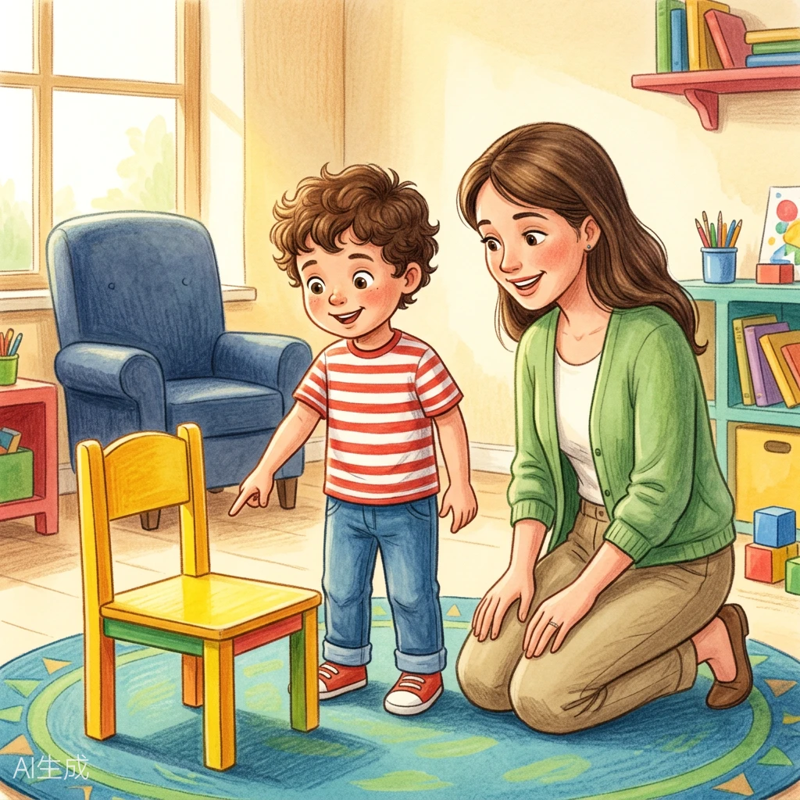
/images/assessment/hfw/variants/replacement-2026-06-05/hfw_26_50/hfw_workbook_hfw_26_50_this_s07.webp/images/assessment/hfw/variants/replacement-2026-06-05/hfw_26_50/hfw_workbook_hfw_26_50_this_s08.webp/images/assessment/hfw/variants/replacement-2026-06-05/hfw_26_50/hfw_workbook_hfw_26_50_this_s09.webp/images/assessment/hfw/variants/replacement-2026-06-05/hfw_26_50/hfw_workbook_hfw_26_50_this_s10.webp/images/assessment/hfw/variants/replacement-2026-06-05/hfw_26_50/hfw_workbook_hfw_26_50_this_s11.webp/images/assessment/hfw/variants/replacement-2026-06-05/hfw_26_50/hfw_workbook_hfw_26_50_this_s12.webp/images/assessment/hfw/variants/replacement-2026-06-05/hfw_26_50/hfw_workbook_hfw_26_50_this_s13.webp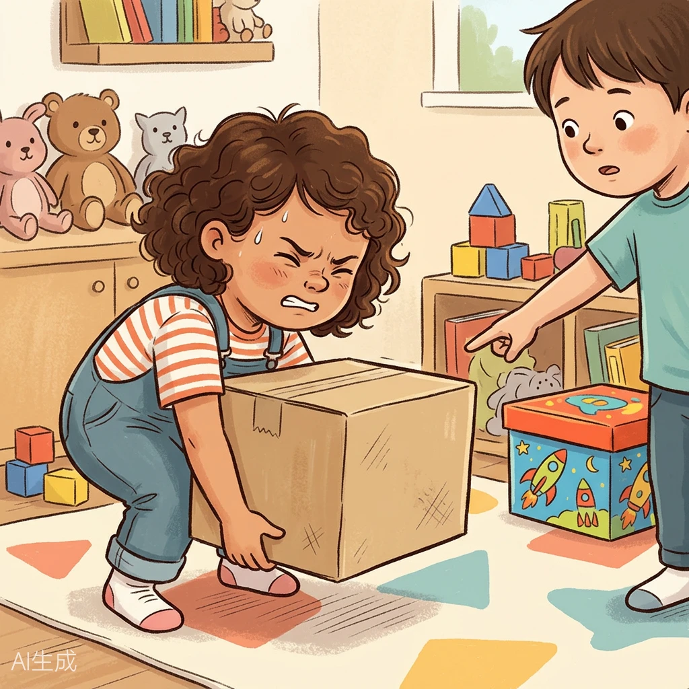
/images/assessment/hfw/variants/replacement-2026-06-05/hfw_26_50/hfw_workbook_hfw_26_50_this_s14.webp/images/assessment/hfw/variants/replacement-2026-06-05/hfw_26_50/hfw_workbook_hfw_26_50_this_s15.webp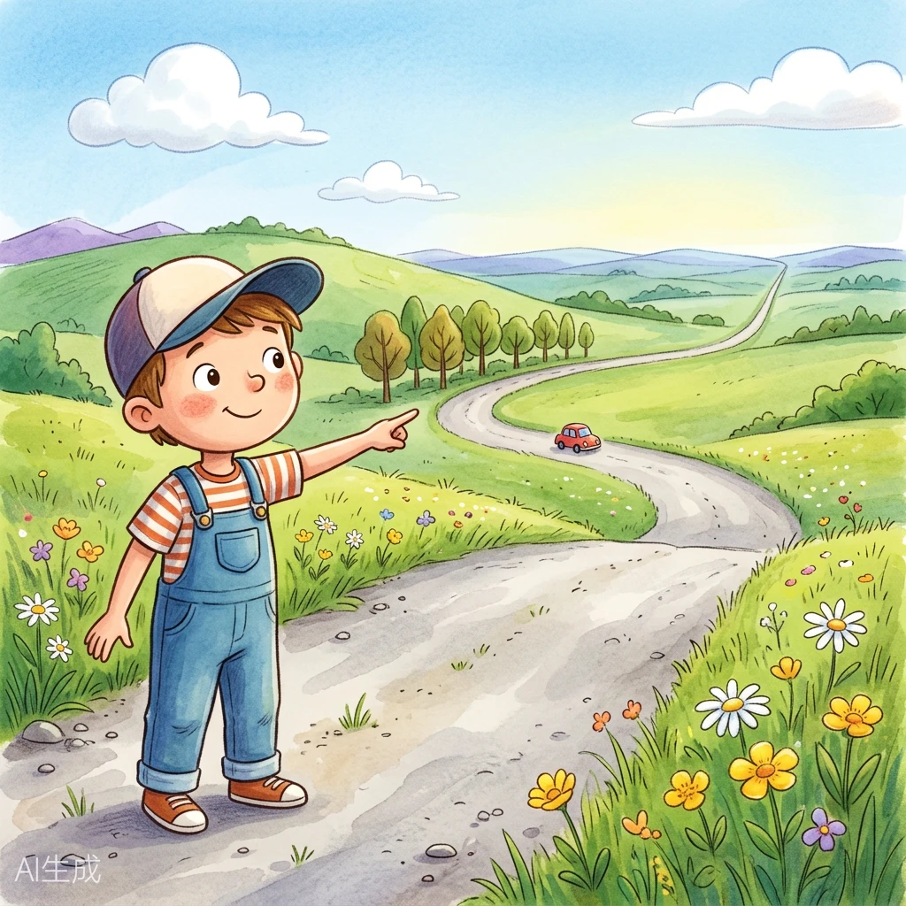
/images/assessment/hfw/variants/replacement-2026-06-05/hfw_26_50/hfw_workbook_hfw_26_50_this_s16.webp/images/assessment/hfw/variants/replacement-2026-06-05/hfw_26_50/hfw_workbook_hfw_26_50_this_s17.webp/images/assessment/hfw/variants/replacement-2026-06-05/hfw_26_50/hfw_workbook_hfw_26_50_this_s18.webp/images/assessment/hfw/variants/replacement-2026-06-05/hfw_26_50/hfw_workbook_hfw_26_50_this_s19.webp/images/assessment/hfw/variants/replacement-2026-06-05/hfw_26_50/hfw_workbook_hfw_26_50_this_s20.webp/images/assessment/hfw/variants/replacement-2026-06-05/hfw_26_50/hfw_workbook_hfw_26_50_was_s01.webp/images/assessment/hfw/variants/replacement-2026-06-05/hfw_26_50/hfw_workbook_hfw_26_50_was_s02.webp/images/assessment/hfw/variants/replacement-2026-06-05/hfw_26_50/hfw_workbook_hfw_26_50_was_s03.webp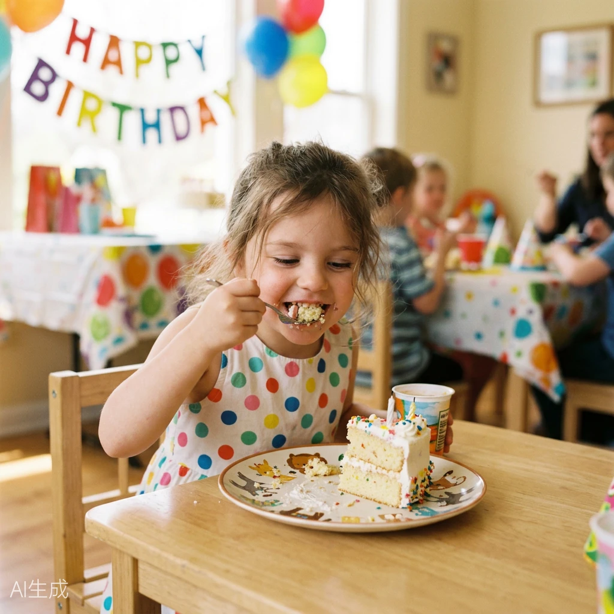
/images/assessment/hfw/variants/replacement-2026-06-05/hfw_26_50/hfw_workbook_hfw_26_50_was_s04.webp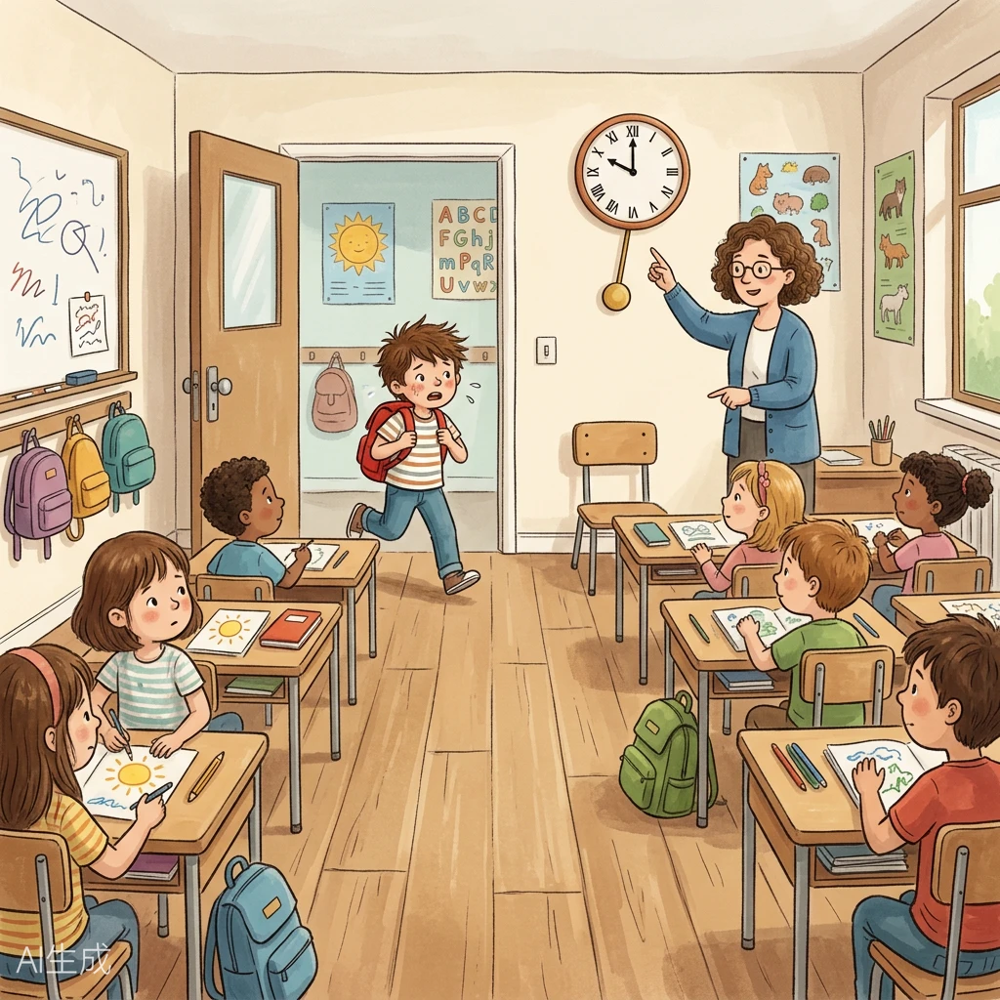
/images/assessment/hfw/variants/replacement-2026-06-05/hfw_26_50/hfw_workbook_hfw_26_50_was_s05.webp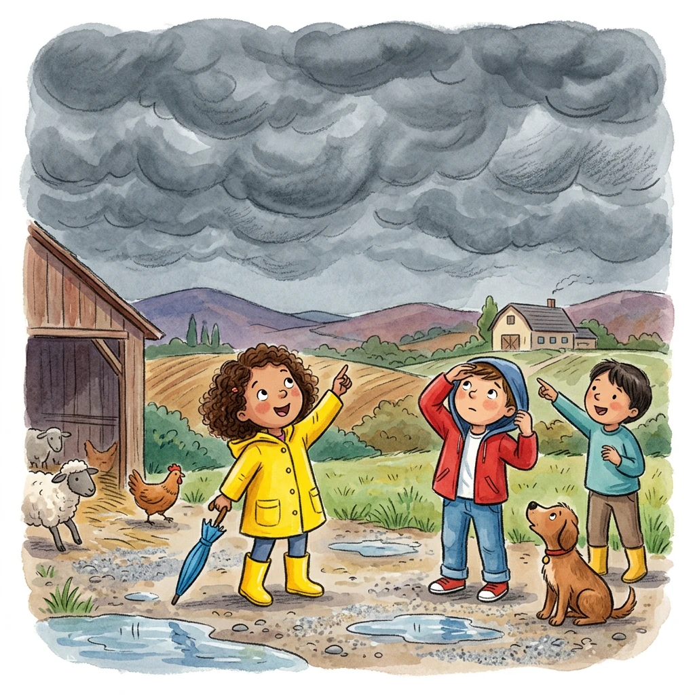
/images/assessment/hfw/variants/replacement-2026-06-05/hfw_26_50/hfw_workbook_hfw_26_50_was_s06.webp/images/assessment/hfw/variants/replacement-2026-06-05/hfw_26_50/hfw_workbook_hfw_26_50_was_s07.webp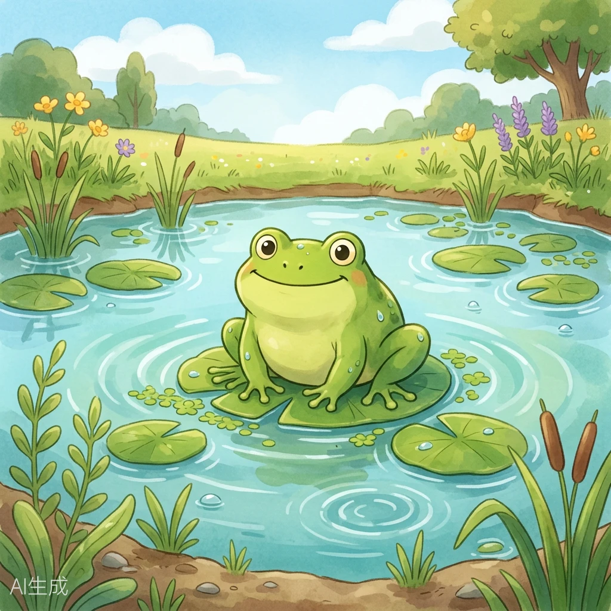
/images/assessment/hfw/variants/replacement-2026-06-05/hfw_26_50/hfw_workbook_hfw_26_50_was_s08.webp/images/assessment/hfw/variants/replacement-2026-06-05/hfw_26_50/hfw_workbook_hfw_26_50_was_s09.webp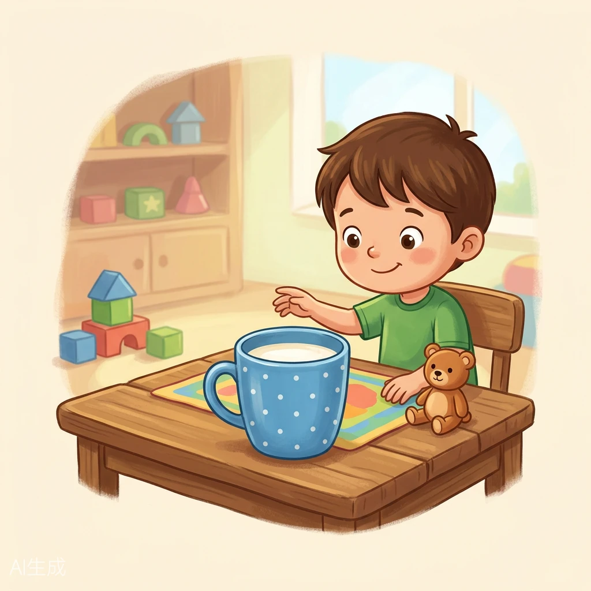
/images/assessment/hfw/variants/replacement-2026-06-05/hfw_26_50/hfw_workbook_hfw_26_50_was_s10.webp/images/assessment/hfw/variants/replacement-2026-06-05/hfw_26_50/hfw_workbook_hfw_26_50_was_s11.webp/images/assessment/hfw/variants/replacement-2026-06-05/hfw_26_50/hfw_workbook_hfw_26_50_was_s12.webp/images/assessment/hfw/variants/replacement-2026-06-05/hfw_26_50/hfw_workbook_hfw_26_50_was_s13.webp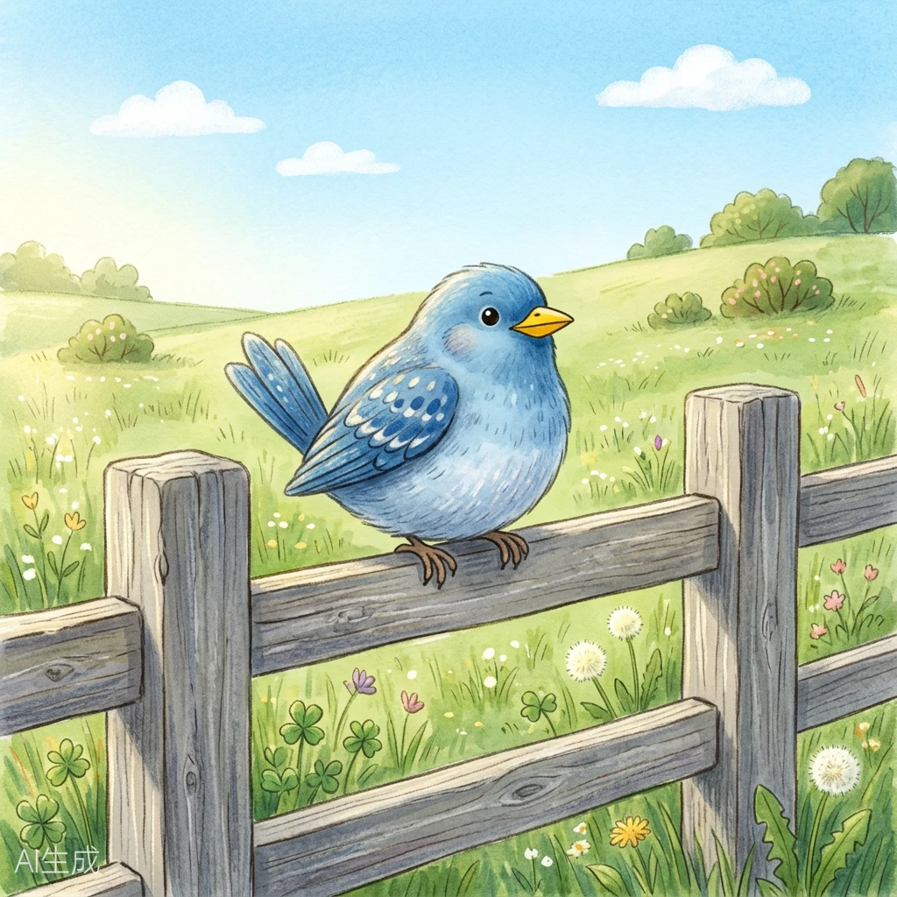
/images/assessment/hfw/variants/replacement-2026-06-05/hfw_26_50/hfw_workbook_hfw_26_50_was_s14.webp/images/assessment/hfw/variants/replacement-2026-06-05/hfw_26_50/hfw_workbook_hfw_26_50_was_s15.webp/images/assessment/hfw/variants/replacement-2026-06-05/hfw_26_50/hfw_workbook_hfw_26_50_was_s16.webp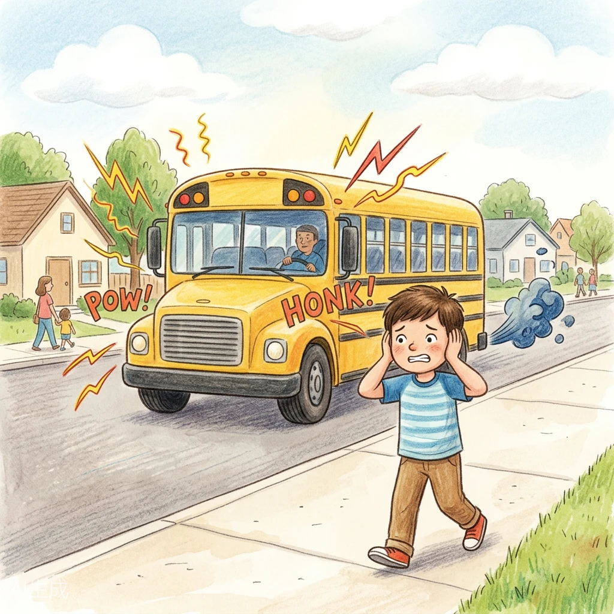
/images/assessment/hfw/variants/replacement-2026-06-05/hfw_26_50/hfw_workbook_hfw_26_50_was_s17.webp/images/assessment/hfw/variants/replacement-2026-06-05/hfw_26_50/hfw_workbook_hfw_26_50_was_s18.webp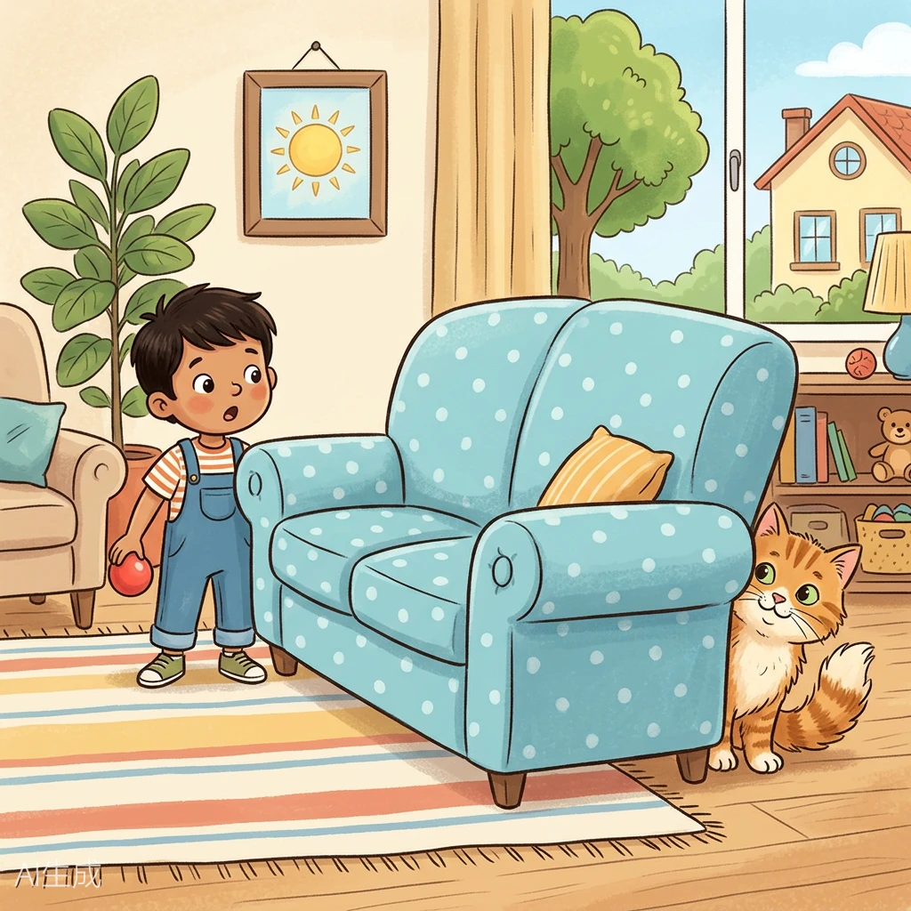
/images/assessment/hfw/variants/replacement-2026-06-05/hfw_26_50/hfw_workbook_hfw_26_50_was_s19.webp/images/assessment/hfw/variants/replacement-2026-06-05/hfw_26_50/hfw_workbook_hfw_26_50_was_s20.webp/images/assessment/hfw/variants/replacement-2026-06-05/hfw_26_50/hfw_workbook_hfw_26_50_what_s01.webp/images/assessment/hfw/variants/replacement-2026-06-05/hfw_26_50/hfw_workbook_hfw_26_50_what_s02.webp/images/assessment/hfw/variants/replacement-2026-06-05/hfw_26_50/hfw_workbook_hfw_26_50_what_s03.webp/images/assessment/hfw/variants/replacement-2026-06-05/hfw_26_50/hfw_workbook_hfw_26_50_what_s04.webp/images/assessment/hfw/variants/replacement-2026-06-05/hfw_26_50/hfw_workbook_hfw_26_50_what_s05.webp/images/assessment/hfw/variants/replacement-2026-06-05/hfw_26_50/hfw_workbook_hfw_26_50_what_s06.webp/images/assessment/hfw/variants/replacement-2026-06-05/hfw_26_50/hfw_workbook_hfw_26_50_what_s07.webp/images/assessment/hfw/variants/replacement-2026-06-05/hfw_26_50/hfw_workbook_hfw_26_50_what_s08.webp/images/assessment/hfw/variants/replacement-2026-06-05/hfw_26_50/hfw_workbook_hfw_26_50_what_s09.webp/images/assessment/hfw/variants/replacement-2026-06-05/hfw_26_50/hfw_workbook_hfw_26_50_what_s10.webp/images/assessment/hfw/variants/replacement-2026-06-05/hfw_26_50/hfw_workbook_hfw_26_50_what_s11.webp/images/assessment/hfw/variants/replacement-2026-06-05/hfw_26_50/hfw_workbook_hfw_26_50_what_s12.webp/images/assessment/hfw/variants/replacement-2026-06-05/hfw_26_50/hfw_workbook_hfw_26_50_what_s13.webp/images/assessment/hfw/variants/replacement-2026-06-05/hfw_26_50/hfw_workbook_hfw_26_50_what_s14.webp/images/assessment/hfw/variants/replacement-2026-06-05/hfw_26_50/hfw_workbook_hfw_26_50_what_s15.webp/images/assessment/hfw/variants/replacement-2026-06-05/hfw_26_50/hfw_workbook_hfw_26_50_what_s16.webp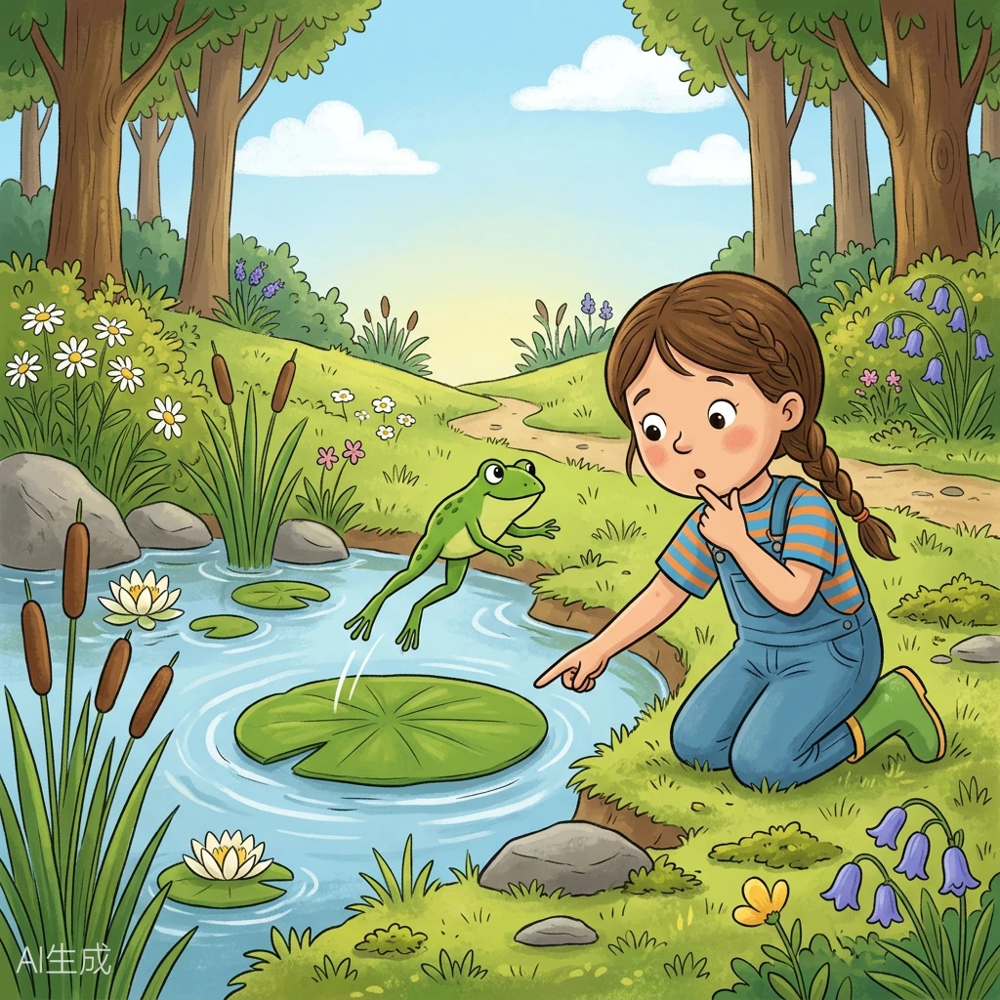
/images/assessment/hfw/variants/replacement-2026-06-05/hfw_26_50/hfw_workbook_hfw_26_50_what_s17.webp/images/assessment/hfw/variants/replacement-2026-06-05/hfw_26_50/hfw_workbook_hfw_26_50_what_s18.webp/images/assessment/hfw/variants/replacement-2026-06-05/hfw_26_50/hfw_workbook_hfw_26_50_what_s19.webp/images/assessment/hfw/variants/replacement-2026-06-05/hfw_26_50/hfw_workbook_hfw_26_50_what_s20.webp/images/assessment/hfw/variants/replacement-2026-06-05/hfw_26_50/hfw_workbook_hfw_26_50_when_s01.webp/images/assessment/hfw/variants/replacement-2026-06-05/hfw_26_50/hfw_workbook_hfw_26_50_when_s02.webp/images/assessment/hfw/variants/replacement-2026-06-05/hfw_26_50/hfw_workbook_hfw_26_50_when_s03.webp/images/assessment/hfw/variants/replacement-2026-06-05/hfw_26_50/hfw_workbook_hfw_26_50_when_s04.webp/images/assessment/hfw/variants/replacement-2026-06-05/hfw_26_50/hfw_workbook_hfw_26_50_when_s05.webp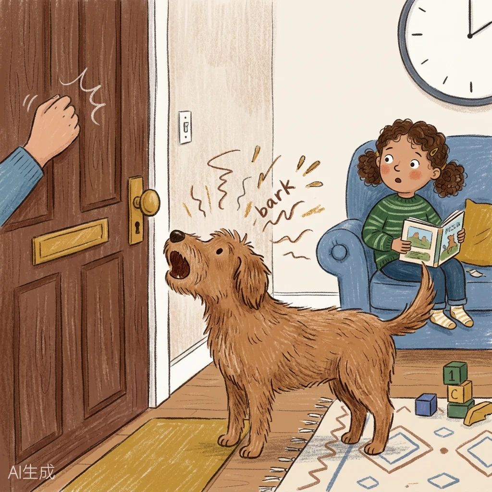
/images/assessment/hfw/variants/replacement-2026-06-05/hfw_26_50/hfw_workbook_hfw_26_50_when_s06.webp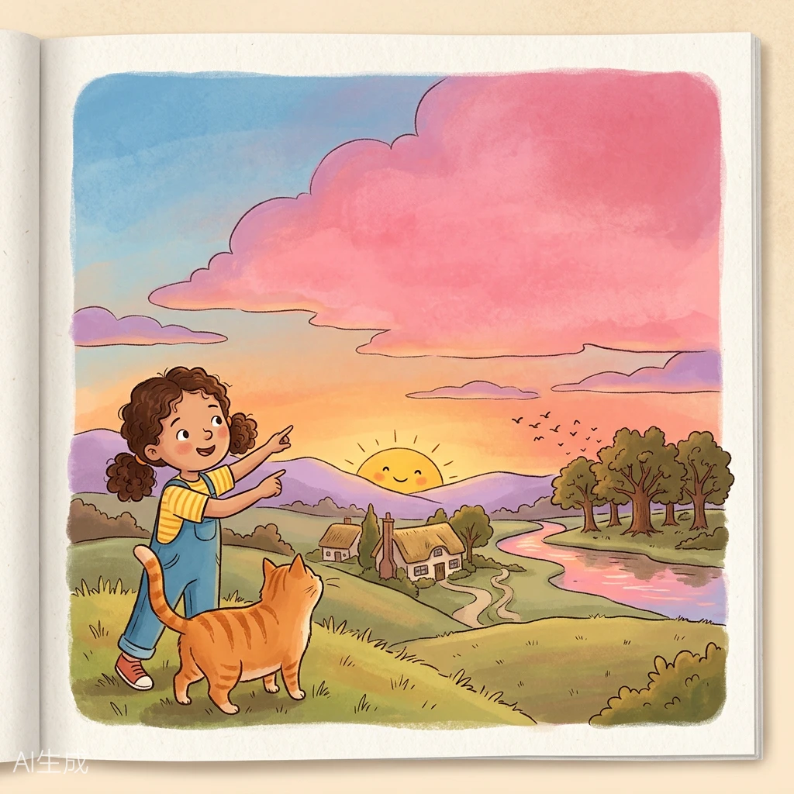
/images/assessment/hfw/variants/replacement-2026-06-05/hfw_26_50/hfw_workbook_hfw_26_50_when_s07.webp/images/assessment/hfw/variants/replacement-2026-06-05/hfw_26_50/hfw_workbook_hfw_26_50_when_s08.webp